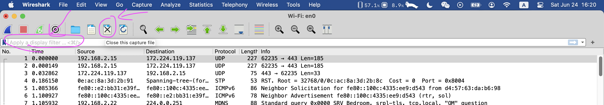
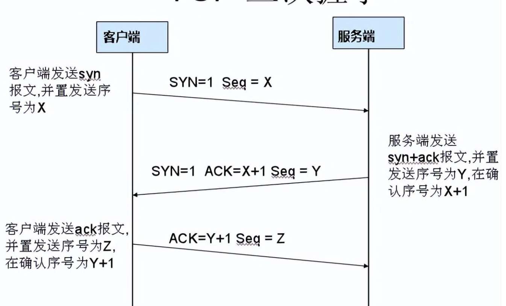
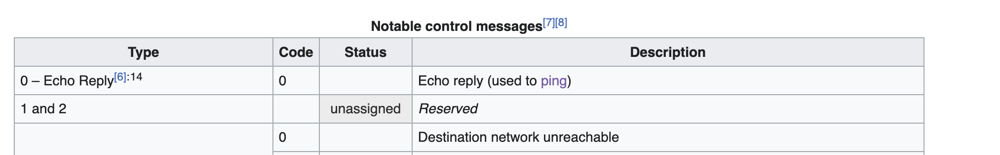
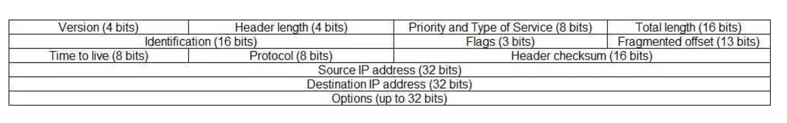

学习使用 Wireshark 抓包分析 - 课堂笔记
Contents
1. Capture Filter is not Display Filter

Capture filters (like tcp port 80) are not to be confused with display filters (like tcp.port == 80). The former are much more limited and are used to reduce the size of a raw packet capture. The latter are used to hide some packets from the packet list.
Capture filters are set before starting a packet capture and cannot be modified during the capture. Display filters on the other hand do not have this limitation and you can change them on the fly.
Display Filter 可以等在主页选择 capture filter 后再进行选择 (on the fly), 重新选择 capture filter 需要先关闭 capture file, 如下:

2. Capture Filter
Capture only traffic to or from IP address 172.18.5.4:
|
|
端口过滤:
|
|
Capture except all ARP and DNS traffic:
|
|
Capture ICMP and UDP:
|
|
其它:
|
|
3. Display Filter
Show only SMTP (port 25) and ICMP traffic:
|
|
IP 过滤:
|
|
端口过滤:
|
|
协议过滤:
|
|
4. 抓 TCP 包分析
1）TCP 3-Way Handshake Process:
- Step1：客户端发送一个SYN=1，ACK=0标志的数据包给服务端，请求进行连接，这是第一次握手；
- Step2：服务端收到请求并且允许连接的话，就会发送一个SYN=1，ACK=1标志的数据包给发送端，告诉它，可以通讯了，并且让客户端发送一个确认数据包，这是第二次握手；
- Step3：服务端发送一个SYN=0，ACK=1的数据包给客户端端，告诉它连接已被确认，这就是第三次握手。TCP连接建立，开始通讯

2）wireshark抓包获取访问指定服务端数据包
- Step1：启动wireshark抓包，打开浏览器输入
google.ca - Step2：使用ping
google.ca获取IP, 以便我们可以在 Wireshark 过滤显示 以便查看分析 - Step3：输入过滤条件获取待分析数据包列表ip.addr == 120.240.100.48 and tcp，这里只抓取tcp的包，要不然其它信息有点多不好看
5. ICMP
启动 Wireshark 捕捉 ICMP 数据包, 在终端输入
|
|
捕捉结果如下, 一个 request 一个 reply,

根据输出可以看出, 应用层直接使用的是 ICMP 数据包装, 然后再加上 IP header, 之后是 ethernet, 中间并没有用到传输层的 TCP 或 UDP,

ICMP 头部的第 1 字节是 type, 第二字节是 code, type+code 决定信息类型, 具体可以在维基百科查看, echo request 的 type = 8, code = 0, echo reply 的 type = 0, code = 0:

ICMP 信息格式如下:

在 Wireshark 打开数据包查看细节, 可以看到具体 header 里都是有什么内容:

然后接着协议栈往下看, 看 IP 包, 先看一下 IP 包的格式:

在 wireshark 展开刚 ICMP 上面的 IP 部分,

这里注意一下, 根据上图 IP header 的长度为 20 bytes, 但是实际值是 0101, 大概是因为这个数字被编码成 32-bit words, 即值为 1, 则就是 4 byes, 这里放上一个解释, 供参考:
- The minimum length of an IPv4 header of a valid datagram is 20 bytes, when the value reads 5 and there are no options
- Since the field is 4 bits wide, the maximum value it can store is 15, thus the maximum length of the header is 60 bytes.
Internet Header Length is the length of the internet header in 32 bit words, and thus points to the beginning of the data. Note that the minimum value for a correct header is 5.
Which means whatever value is stored in the IHL, it should be multiplied with 32 to get the total number of bits, or with 4 to get the total number of bytes.
再往下的是以太帧和链路层数据包, 不在此讨论范围,
参考:
Author David
LastMod 2023-06-24